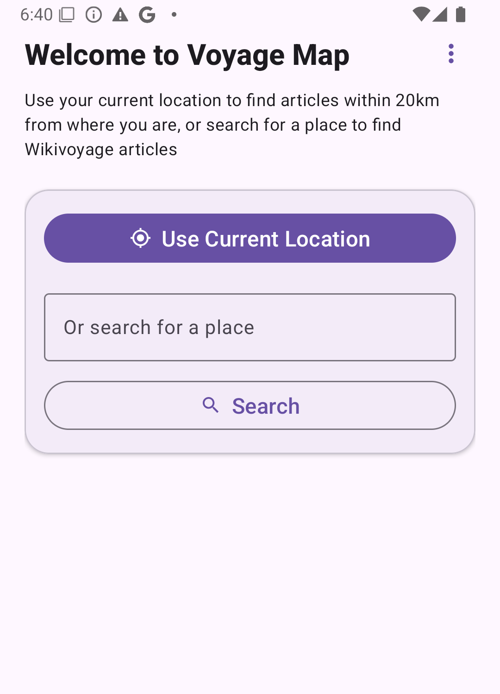
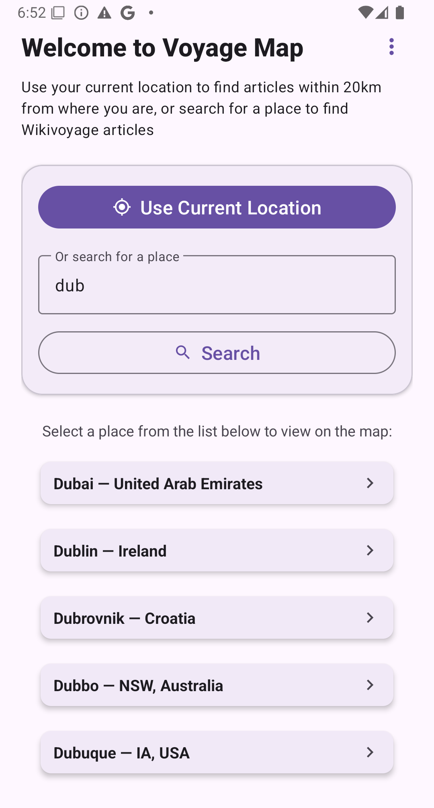
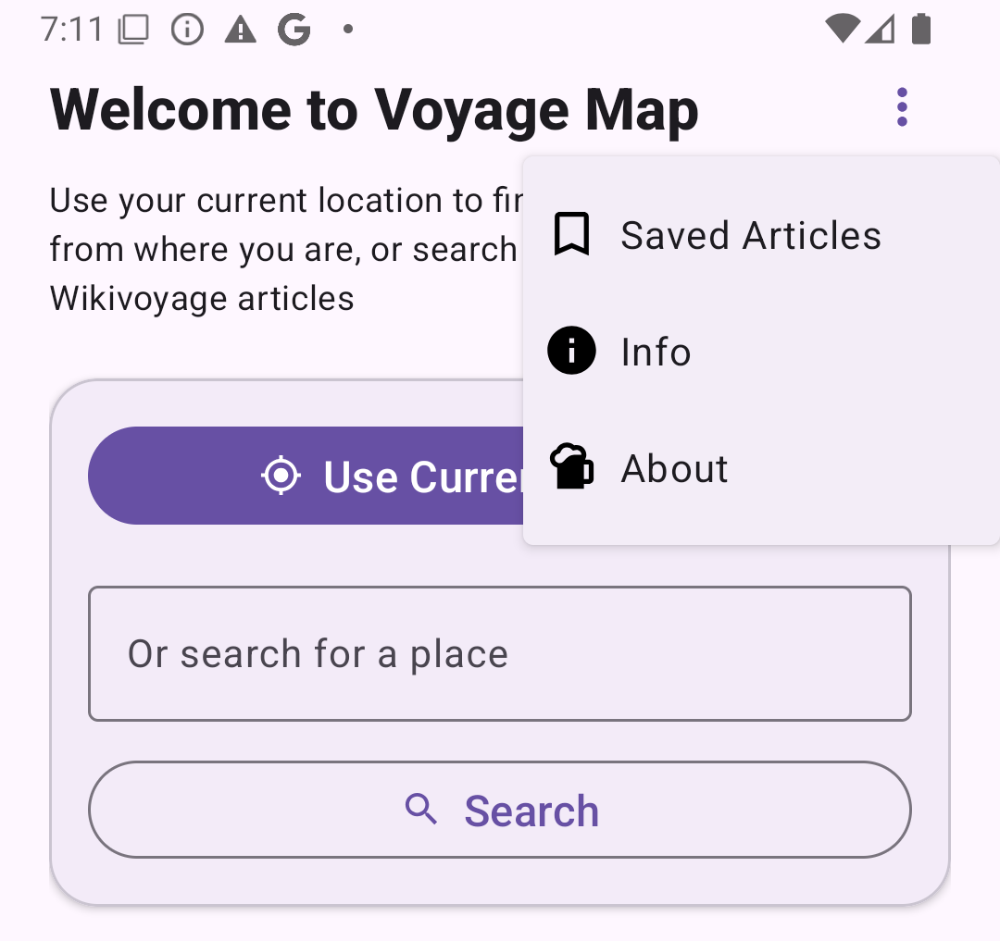
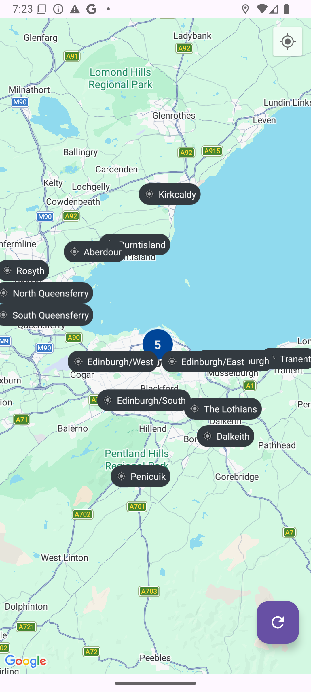
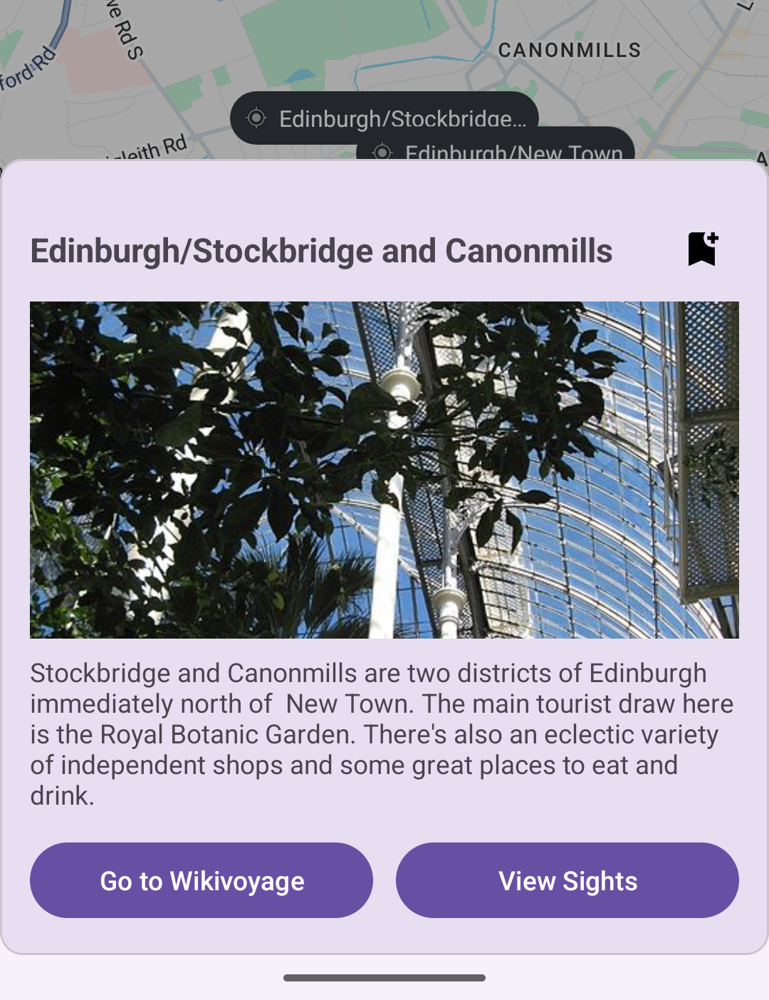
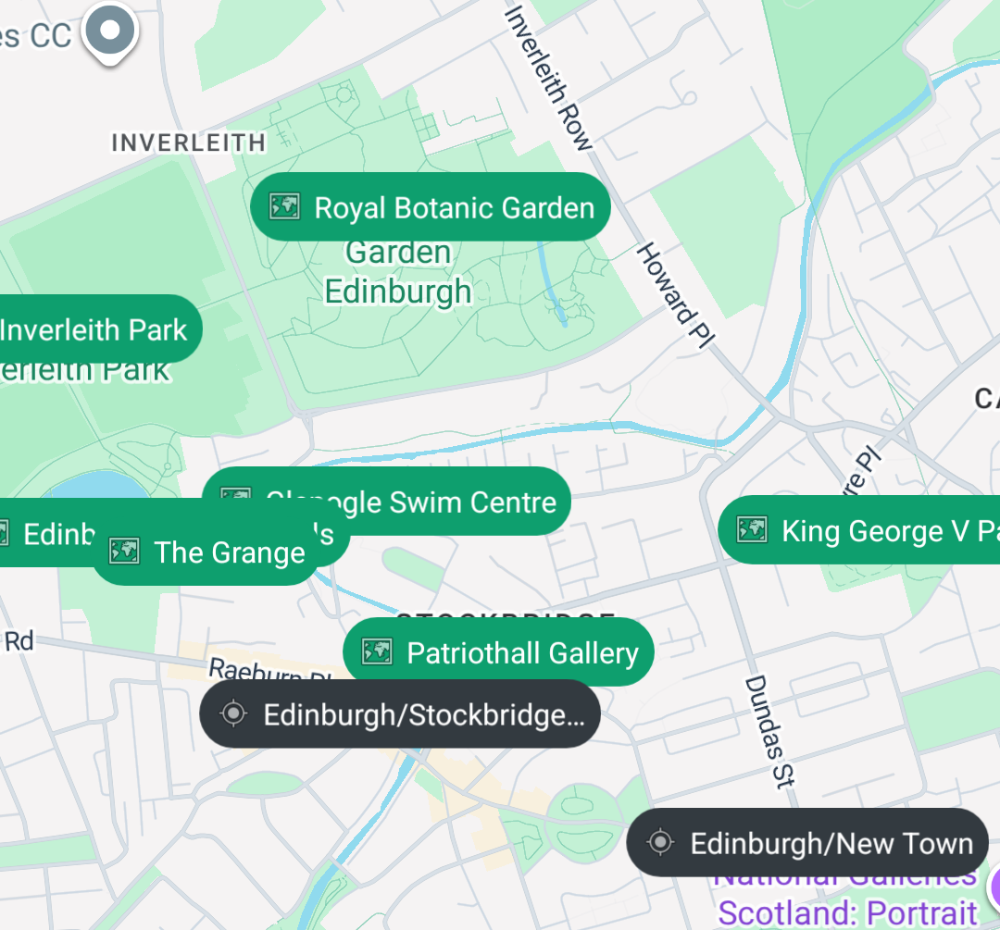
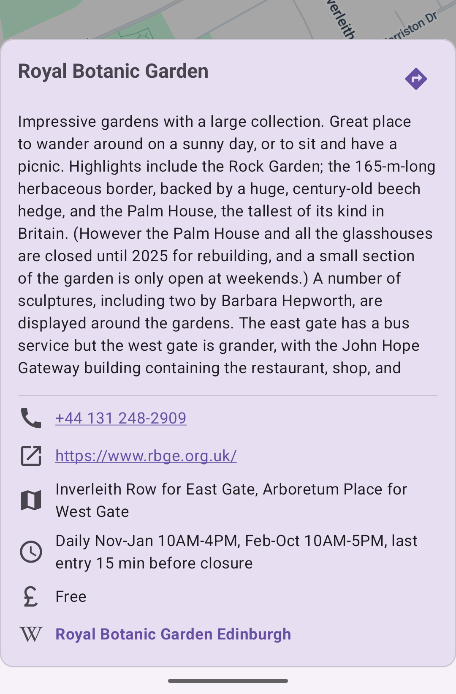

Last updated: 29th March 2026
Voyage Map is a free mobile application that displays travel information from Wikivoyage. Go check it out, it's nice crowd-sourced website that is basically Wikipedia for Travel Guides!
When you open the app for the first time, you'll get some basic info about how to use the app, but below we will detail a few more of the features of the app. The app can also use your location to show articles close to where you currently are.
The app allows you to save articles for offline use, as well as cache the last few articles that you loaded up, in case you do not have an internet connection.
When you open the app, after viewing the info and agreeing to (or not to) share your location, you will be presented with something that resembles this:

From here, you can:
Ah yes, the big obvious button. If you click this, the map view will open, and you will be shown all Wikivoyage articles that are within 20km of your current location (if the app can determine that). Nice and easy
Before you hit the Search button, it's a good idea to type something into the search text box, otherwise the app will simply do nothing. Just one letter is good enough, but it might not be precise enough to get you close to the answer you are looking for, so, you know, type as many as you can, or feel comfortable with!
After you hit search, hopefully some results will show up. I have tried searching for "xyz", and nothing came up. But generally speaking any sensible search term should show up something, for example:

Simply click on the result that is the right one for you, and you will be taken to the map view - where the magic happens. If you don't see your result there, maybe try to be a bit more precise. Unfortunately the search only returns 5 results at a time.
But wait, there's more (but not that much more, but hopefully in the future with some enhancements)! See the 3 vertical dots in the top right hand side of the app? Click on that, and you'll get some more features.

If there is a place you are particularly interested in, you can save it so that it is always on your phone, regardless of whether you have an internet connection or not. More on how to do that later, but when you do save an article, this is where you can find a way to display them in a clickable list.
This will display the dialog that gives a quick overview of how to use the app (the dialog that shows up the first time you ever open the app), which also includes a link to this handy document.
Yes, that is a beer icon, simply because I love beer, and I wrote the app, so I can put in whatever I want to represent About. And About is about me and the app.
Now we're getting into the real meat of the app. Everything up until this point was just setting the scene. Regardless of whether you have come to this step via the "Use Current Location" button, saved articles or by searching for, and clicking on, a specific place, you'll be faced with something like this:

I searched for Edinburgh, and there are quite a few Wikivoyage articles within 20km, hence we see quite a lot of black pins on the map. If you searched for somewhere quite remote, you may get zero or just one or two results. The map will usually zoom to a level whereby all the pins are viewable.
In this example of Edinburgh, there's a big 5 in the middle of the screen. This simply means that there are a lot of articles close together, so if you zoom in a bit more, then you will see what they are.
Apart from the black pins on the map, there are a couple of other buttons on the map, one in the top right and one in the bottom right.
The bottom right one is to refresh the articles. Say you've been zooming and panning around the map, if you go outside the original 20km zone, you can click this to load articles that are close to where you moved to.
The top right one is the current location button - clicking on that will zoom the map to wherever you are. If you don't see any articles, a quick press of the Refresh button in the bottom right should load anything within 20km of your location. If you still see nothing, either you are offline, or you are really out in the middle of nowhere!
Clicking on one of the black pins will bring up some info about the place you clicked, along with three buttons:

This simply does what it says it will do. It will open the Wikivoyage article in your default browser
This is the next important part of the app. On clicking this, hopefully a number of green pins will appear on the app. These are the sights that are listed in Wikivoyage for this location, all handily mapped out on the, erm, map.

Clicking any of these green pins will show you details about that sight. We try to extract as much useful info as possible from the details in the Wikivoyage article, including:

Not all articles have all this info, so if it is missing we can't display it. This example does. Sometimes you get a nice picture too. This example doesn't have that, but plenty do. Also, there is a directions button in the top right corner, if you click on that it should open up in Google Maps, and you can navigate yourself there if interested in visiting.
You can also click on a few of the details, like phone number, website, address and Wikipedia link and they should do what you would expect them to do (namely, open the phone app, open the website, open Google Maps and open the wikipedia page respectively).
The final button on the Article view lets you save the article, and it's not quite as prominent as the other two, hiding in the top right of the Article view. It looks like . Click on it to save the article, and the icon will update to . Click it again to remove it from your saved articles list.
Saving an article means that it will still be available to view if you are offline (including the sights too). Which can be handy when in a foreign country, as you do not always have access to mobile data. You can access these saved articles via the three-vertical-dot menu on the home page.
For details on privacy and data handling, see the Privacy Policy.
Quite simply as I have found that info to be either out of date or unreliable. Sure, I reckon some of the data is probably kept up to date, but those types of things are much more likely to change frequently, unlike, say, the Eiffel Tower. Use the "Go to Wikivoyage" button on the article card to see all the other sections I've left out.